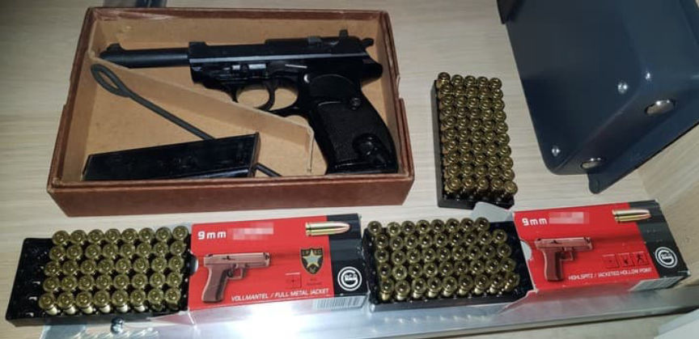
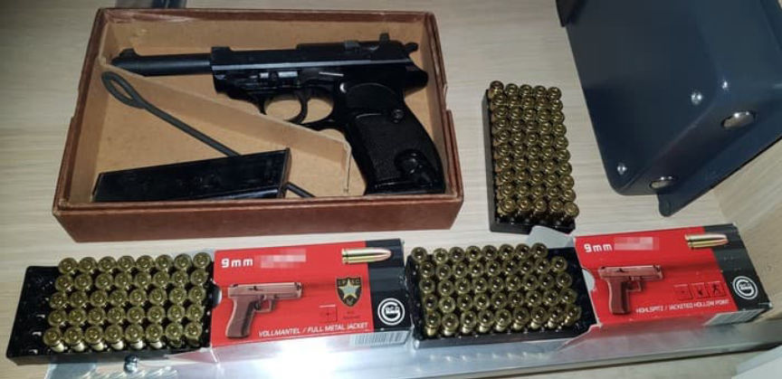

Alleged Firearm Vendor and Customers Charged in Germany
~2 min read | Published on 2021-06-29, tagged Arrested, Darkweb-Vendor, Firearms, German using 365 words.
Four Germans allegedly traded firearms and other weapons on the darkweb, according to authorities in Frankfurt.
The Frankfurt am Main Customs Investigation Office announced in a press release that the four defendants are facing charges for buying and/or selling weapons on the darkweb. The investigation that led to these charges began in April 2016. Investigators targeted firearm vendors on the darkweb as well as their customers.

One suspect, a 39-year-old from Lübeck, is accused of being a darkweb weapons vendor. A search of the suspect’s house resulted in the seizure of 855 rounds of ammunition, brass knuckles, a butterfly knife, and a prohibited laser. The investigation into the 39-year-old also led to the identification of two suspected customers.
Three suspects, a 65-year-old from Ludwigshafen, a 40-year-old from Bavaria, a 39-year-old from Schaumburg allegedly purchased weapons or ammunition from the suspected darkweb vendor.
A search of the 65-year-old’s house resulted in the seizure of one handgun, 265 rounds of ammunition, and brass knuckles. Investigators searched the 40-year-old’s residence and seized eight handguns, one rifle, 142 rounds of ammunition, and 80 so-called “pyrotechnic devices.” The search of the 39-year-old’s house resulted in the seizure of two handguns, one “shotgun” with a prohibited laser attachment, 99 rounds of ammunition, and unspecified weapon parts. The announcement also accused the suspected buyer of producing his weapons. (DNL note: the Frankenstein flare-gun-turned-shotgun might have tipped them off and the “weapons parts” likely included the AR-style pistol grip visible in the picture below.)

The spokeswoman for the Frankfurt customs investigation office:
“The successes of the investigation make it clear that the Darknet is not a legal vacuum. Anyone who commits crimes via the Darknet must expect to be identified and prosecuted at any time.”
The four suspects did not have permits for the sale, manufacture, and possession of weapons and ammunition. They were as a result charged by the public prosecutor’s offices in Lübeck, Frankenthal, Bückeburg, and Bamberg.
The 39-year-old defendant from the Schaumburg district has already been found guilty and was ordered to pay a fine of several thousand euros.
Criminal proceedings against the rest of the defendants are ongoing.
The Frankfurt am Main Customs Investigation Office announced in a press release that the four defendants are facing charges for buying and/or selling weapons on the darkweb. The investigation that led to these charges began in April 2016. Investigators targeted firearm vendors on the darkweb as well as their customers.

Authorities seized what appears to be a P1/P38 and two boxes of 9mm ammunition.
One suspect, a 39-year-old from Lübeck, is accused of being a darkweb weapons vendor. A search of the suspect’s house resulted in the seizure of 855 rounds of ammunition, brass knuckles, a butterfly knife, and a prohibited laser. The investigation into the 39-year-old also led to the identification of two suspected customers.
Three suspects, a 65-year-old from Ludwigshafen, a 40-year-old from Bavaria, a 39-year-old from Schaumburg allegedly purchased weapons or ammunition from the suspected darkweb vendor.
A search of the 65-year-old’s house resulted in the seizure of one handgun, 265 rounds of ammunition, and brass knuckles. Investigators searched the 40-year-old’s residence and seized eight handguns, one rifle, 142 rounds of ammunition, and 80 so-called “pyrotechnic devices.” The search of the 39-year-old’s house resulted in the seizure of two handguns, one “shotgun” with a prohibited laser attachment, 99 rounds of ammunition, and unspecified weapon parts. The announcement also accused the suspected buyer of producing his weapons. (DNL note: the Frankenstein flare-gun-turned-shotgun might have tipped them off and the “weapons parts” likely included the AR-style pistol grip visible in the picture below.)
Amazingly, this shotgun is not available on shelves.
The spokeswoman for the Frankfurt customs investigation office:
“The successes of the investigation make it clear that the Darknet is not a legal vacuum. Anyone who commits crimes via the Darknet must expect to be identified and prosecuted at any time.”
The four suspects did not have permits for the sale, manufacture, and possession of weapons and ammunition. They were as a result charged by the public prosecutor’s offices in Lübeck, Frankenthal, Bückeburg, and Bamberg.
The 39-year-old defendant from the Schaumburg district has already been found guilty and was ordered to pay a fine of several thousand euros.
Criminal proceedings against the rest of the defendants are ongoing.